CovarianceModel¶
- class CovarianceModel(*args)¶
Covariance model.
Base class for covariance models.
Methods
__call__(*args)Evaluate the covariance function.
computeAsScalar(*args)Compute the covariance function for scalar model.
computeCrossCovariance(*args)computeCrossCovariance the covariance function on a given mesh.
discretize(*args)Discretize the covariance function on a given mesh.
discretizeAndFactorize(*args)Discretize and factorize the covariance function on a given mesh.
Discretize and factorize the covariance function on a given mesh.
discretizeHMatrix(*args)Discretize the covariance function on a given mesh using HMatrix result.
discretizeRow(vertices, p)(TODO)
draw(*args)Draw a specific component of the covariance model with input dimension 1.
Accessor to the active parameter set.
Get the amplitude parameter
 of the covariance function.
of the covariance function.Accessor to the object's name.
Get the full parameters of the covariance function.
Get the description full parameters of the covariance function.
getId()Accessor to the object's id.
Accessor to the underlying implementation.
Get the input dimension
 of the covariance function.
of the covariance function.getMarginal(*args)Get the ith marginal of the model.
getName()Accessor to the object's name.
Accessor to the nugget factor.
Get the spatial correlation matrix 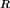 of the covariance function.
Get the dimension
 of the covariance function.
of the covariance function.Get the parameters of the covariance function.
Get the description of the covariance function parameters.
getScale()Get the scale parameter
 of the covariance function.
of the covariance function.Test whether the model is diagonal or not.
Test whether the model is stationary or not.
parameterGradient(s, t)Compute the gradient according to the parameters.
partialGradient(s, t)Compute the gradient of the covariance function.
setActiveParameter(active)Accessor to the active parameter set.
setAmplitude(amplitude)Set the amplitude parameter
of the covariance function.setFullParameter(parameter)Set the full parameters of the covariance function.
setName(name)Accessor to the object's name.
setNuggetFactor(nuggetFactor)Set the nugget factor for the variance of the observation error.
setOutputCorrelation(correlation)Set the spatial correlation matrix of the covariance function.
setParameter(parameter)Set the parameters of the covariance function.
setScale(scale)Set the scale parameter
of the covariance function.- __init__(*args)¶
- computeAsScalar(*args)¶
Compute the covariance function for scalar model.
- Available usages:
computeAsScalar(s, t)
computeAsScalar(tau)
- Parameters
- s, tfloats (if
 ) or sequences of floats (any )
) or sequences of floats (any ) Multivariate index 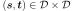
- taufloat (if ) or sequence of floats (any )
Multivariate index 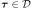
- s, tfloats (if
- Returns
- covariancefloat
Covariance.
Notes
The method makes sense only if the dimension of the process is
 .
It evaluates
.
It evaluates  .
.In the second usage, the covariance model must be stationary. Then we note
 for 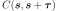 as
this quantity does not depend on
for 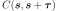 as
this quantity does not depend on  .
.
- computeCrossCovariance(*args)¶
computeCrossCovariance the covariance function on a given mesh.
- Parameters
- Returns
- Matrix
Matrix Container of the cross covariance
- Matrix
Notes
This method computes a cross-covariance matrix. The cross-covariance is the evaluation of the covariance model on both firstVertices and secondVertices.
If
 contains
contains  points and 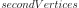 contains 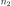 points,
the method returns an 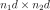 matrix ( being the output dimension).
points and 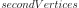 contains 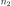 points,
the method returns an 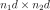 matrix ( being the output dimension).To make things easier, let us focus on the
case.
Let  be the points of firstVertices
and let 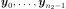 be the points of secondVertices.
The result is the 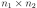 matrix 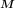
such that for any nonnegative integers 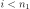 and
be the points of firstVertices
and let 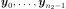 be the points of secondVertices.
The result is the 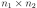 matrix 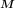
such that for any nonnegative integers 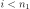 and  ,
,
 .
.
- discretize(*args)¶
Discretize the covariance function on a given mesh.
- Parameters
- where
MeshorRegularGridorSample Container of the discretization vertices
- where
- Returns
- covarianceMatrix
CovarianceMatrix Covariance matrix
 (if the process is of
dimension )
(if the process is of
dimension )
- covarianceMatrix
Notes
This method makes a discretization of the model on the given
Mesh,RegularGridorSamplecomposed of the vertices and returns the
covariance matrix:
and returns the
covariance matrix:
- discretizeAndFactorize(*args)¶
Discretize and factorize the covariance function on a given mesh.
- Parameters
- where
MeshorRegularGridorSample Container of the discretization vertices
- where
- Returns
- CholeskyMatrix
TriangularMatrix Cholesky factor of the covariance matrix 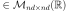 (if the process is of dimension
)
- CholeskyMatrix
Notes
This method makes a discretization of the model on the given
Mesh,RegularGridorSamplecomposed of the vertices thanks to the
discretize()method and returns its Cholesky factor.
- discretizeAndFactorizeHMatrix(*args)¶
Discretize and factorize the covariance function on a given mesh.
This uses HMatrix.
- Parameters
- where
MeshorRegularGridorSample Container of the discretization vertices
- hmatParam
HMatrixParameters Parameter values for the HMatrix
- where
- Returns
- HMatrix
HMatrix Cholesk matrix
(if the process is of
dimension ), stored in hierarchical format (H-Matrix)
- HMatrix
Notes
This method is similar to the
discretizeAndFactorize()method. This method requires that requires that OpenTURNS has been compiled with the hmat library. The method is helpful for very large parameters (Mesh, grid, Sample) because it compresses data.
- discretizeHMatrix(*args)¶
Discretize the covariance function on a given mesh using HMatrix result.
- Parameters
- where
MeshorRegularGridorSample Container of the discretization vertices
- hmatParam
HMatrixParameters Parameter values for the HMatrix
- where
- Returns
- HMatrix
HMatrix Covariance matrix
 (if the process is of
dimension ), stored in hierarchical format (H-Matrix)
(if the process is of
dimension ), stored in hierarchical format (H-Matrix)
- HMatrix
Notes
This method is similar to the
discretize()method. This method requires that OpenTURNS has been compiled with the hmat library. The method is helpful for very large parameters (Mesh, grid, Sample) because it compresses data.
- discretizeRow(vertices, p)¶
(TODO)
- draw(*args)¶
Draw a specific component of the covariance model with input dimension 1.
- Parameters
- rowIndexint,

The row index of the component to draw. Default value is 0.
- columnIndex: int, :math:`0 leq columnIndex < dimension`
The column index of the component to draw. Default value is 0.
- tMinfloat
The lower bound of the range over which the model is plotted. Default value is CovarianceModel-DefaultTMin in
ResourceMap.- tMaxfloat
The upper bound of the range over which the model is plotted. Default value is CovarianceModel-DefaultTMax in
ResourceMap.- pointNumberint,

The discretization of the range
![[tMin,tMax]](../../_images/math/d5eb6bcfe07f16f2dc6eb0a1a5e8304e85fe9b77.svg) over which the model is plotted. Default value is CovarianceModel-DefaultPointNumber in class:~openturns.ResourceMap.
over which the model is plotted. Default value is CovarianceModel-DefaultPointNumber in class:~openturns.ResourceMap.- asStationarybool
Flag to tell if the model has to be plotted as a stationary model, ie as a function of the lag 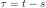 if equals to True, or as a non-stationary model, ie as a function of 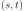 if equals to False. Default value is True.
- correlationFlagbool
Flag to tell if the model has to be plotted as a correlation function if equals to True or as a covariance function if equals to False. Default value is False.
- rowIndexint,
- Returns
- graph
Graph A graph containing a unique curve if asStationary=True and if the model is actually a stationary model, or containing the iso-values of the model if asStationary=False or if the model is nonstationary.
- graph
- getActiveParameter()¶
Accessor to the active parameter set.
- Returns
- active
Indices Indices of the active parameters.
- active
- getAmplitude()¶
Get the amplitude parameter
of the covariance function.- Returns
- amplitude
Point The amplitude parameter
 of the covariance
function.
of the covariance
function.
- amplitude
- getClassName()¶
Accessor to the object’s name.
- Returns
- class_namestr
The object class name (object.__class__.__name__).
- getFullParameter()¶
Get the full parameters of the covariance function.
- Returns
- parameter
Point List the full parameter of the covariance function i.e. scale parameter 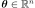, the the amplitude parameter
,
the Spatial correlation parameter 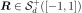;
and potential other parameter depending on the model;
- parameter
- getFullParameterDescription()¶
Get the description full parameters of the covariance function.
- Returns
- description
Description Description of the full parameter of the covariance function.
- description
- getId()¶
Accessor to the object’s id.
- Returns
- idint
Internal unique identifier.
- getImplementation()¶
Accessor to the underlying implementation.
- Returns
- implImplementation
A copy of the underlying implementation object.
- getInputDimension()¶
Get the input dimension
of the covariance function.- Returns
- inputDimensionint
Spatial dimension
of the covariance function.
- getMarginal(*args)¶
Get the ith marginal of the model.
- Returns
- marginalint or sequence of int
index of marginal of the model.
- getName()¶
Accessor to the object’s name.
- Returns
- namestr
The name of the object.
- getNuggetFactor()¶
Accessor to the nugget factor.
This parameter allows smooth predictions from noisy data. The nugget is added to the diagonal of the assumed training covariance (thanks to discretize) and acts as a Tikhonov regularization in the problem.
- Returns
- nuggetFactorfloat
Nugget factor used to model the observation error variance.
- getOutputCorrelation()¶
Get the spatial correlation matrix of the covariance function.
- Returns
- spatialCorrelation
CorrelationMatrix Correlation matrix 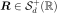.
- spatialCorrelation
- getOutputDimension()¶
Get the dimension
of the covariance function.- Returns
- dint
Dimension
such that  This is the dimension of the process
This is the dimension of the process  .
.
- getParameter()¶
Get the parameters of the covariance function.
- Returns
- parameters
Point List of the scale parameter and the amplitude parameter
of the covariance
function.The other specific parameters are not included.
- parameters
- getParameterDescription()¶
Get the description of the covariance function parameters.
- Returns
- descriptionParam
Description Description of the components of the parameters obtained with the getParameter method..
- descriptionParam
- getScale()¶
Get the scale parameter
of the covariance function.- Returns
- scale
Point The scale parameter used in the covariance function.
- scale
- isDiagonal()¶
Test whether the model is diagonal or not.
- Returns
- isDiagonalbool
True if the model is diagonal.
- isStationary()¶
Test whether the model is stationary or not.
- Returns
- isStationarybool
True if the model is stationary.
Notes
The covariance function
 is stationary when it is invariant by
translation:
is stationary when it is invariant by
translation:
We note
for .
- parameterGradient(s, t)¶
Compute the gradient according to the parameters.
- Parameters
- s, tsequences of float
Multivariate index .
- Returns
- gradient
Matrix Gradient of the function according to the parameters.
- gradient
- partialGradient(s, t)¶
Compute the gradient of the covariance function.
- Parameters
- s, tfloats or sequences of float
Multivariate index .
- Returns
- gradient
Matrix Gradient of the covariance function.
- gradient
- setActiveParameter(active)¶
Accessor to the active parameter set.
- Parameters
- activesequence of int
Indices of the active parameters.
- setAmplitude(amplitude)¶
Set the amplitude parameter
of the covariance function.- Parameters
- amplitude
Point The amplitude parameter
to be used in the
covariance function.
Its size must be equal to the dimension of the covariance function.
- amplitude
- setFullParameter(parameter)¶
Set the full parameters of the covariance function.
- Parameters
- parameter
Point List the full parameter of the covariance function i.e. scale parameter , the the amplitude parameter
,
the Spatial correlation parameter ;
and potential other parameter depending on the model;Must be at least of dimension
 .
.
- parameter
- setName(name)¶
Accessor to the object’s name.
- Parameters
- namestr
The name of the object.
- setNuggetFactor(nuggetFactor)¶
Set the nugget factor for the variance of the observation error.
Acts on the discretized covariance matrix.
- Parameters
- nuggetFactorfloat
nugget factor to be used to model the variance of the observation error.
- setOutputCorrelation(correlation)¶
Set the spatial correlation matrix of the covariance function.
- Parameters
- spatialCorrelation
CorrelationMatrix Correlation matrix .
- spatialCorrelation
 .
.